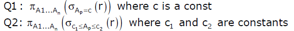

Following Questions have been asked in GATE 2011 exam.
1. Consider a relational table with a single record for each registered student with the following attributes.
1. Registration_Number:< Unique registration number for each registered student
2. UID: Unique Identity number, unique at the national level for each citizen
3. BankAccount_Number: Unique account number at the bank. A student can have multiple accounts or joint accounts. This attributes stores the primary account number
4. Name: Name of the Student
5. Hostel_Room: Room number of the hostel
Which of the following options is INCORRECT?
(A) BankAccount_Number is a candidate key
(B) Registration_Number can be a primary key
(C) UID is a candidate key if all students are from the same country
(D) If S is a superkey such that S ∩ UID is NULL then S ∪ UID is also a superkey
Answer (A)
A Candidate Key value must uniquely identify the corresponding row in table. BankAccount_Number is not a candidate key. As per the question “A student can have multiple accounts or joint accounts. This attributes stores the primary account number”. If two students have a joint account and if the joint account is their primary account, then BankAccount_Number value cannot uniquely identify a row.
2) Consider a relational table r with sufficient number of records, having attributes A1, A2,…, An and let 1 <= p="" <="n." two="" queries="" q1="" and="" q2="" are="" given="" below.<="" strong="">

The database can be configured to do ordered indexing on Ap or hashing on Ap. Which of the following statements is TRUE?
(A) Ordered indexing will always outperform hashing for both queries
(B) Hashing will always outperform ordered indexing for both queries
(C) Hashing will outperform ordered indexing on Q1, but not on Q2
(D) Hashing will outperform ordered indexing on Q2, but not on Q1.
{kind=link}
Answer (C)
If record are accessed for a particular value from table, hashing will do better. If records are accessed in a range of values, ordered indexing will perform better. See this for more details.
3) Database table by name Loan_Records is given below.
Borrower Bank_Manager Loan_Amount Ramesh Sunderajan 10000.00 Suresh Ramgopal 5000.00 Mahesh Sunderajan 7000.00
What is the output of the following SQL query?
SELECT Count(*)
FROM ( (SELECT Borrower, Bank_Manager
FROM Loan_Records) AS S
NATURAL JOIN (SELECT Bank_Manager,
Loan_Amount
FROM Loan_Records) AS T );
(A) 3
(B) 9
(C) 5
(D) 6
Answer (C)
Following will be contents of temporary table S
Borrower Bank_Manager -------------------------- Ramesh Sunderajan Suresh Ramgqpal Mahesh Sunderjan
Following will be contents of temporary table T
Bank_Manager Loan_Amount --------------------------- Sunderajan 10000.00 Ramgopal 5000.00 Sunderjan 7000.00
Following will be the result of natural join of above two tables. The key thing to note is that the natural join happens on column name with same name which is Bank_Manager in the above example. “Sunderjan” appears two times in Bank_Manager column, so their will be four entries with Bank_Manager as “Sunderjan”.
Borrower Bank_Manager Load_Amount ------------------------------------ Ramesh Sunderajan 10000.00 Ramesh Sunderajan 7000.00 Suresh Ramgopal 5000.00 Mahesh Sunderajan 10000.00 Mahesh Sunderajan 7000.00
4) Consider a database table T containing two columns X and Y each of type integer. After the creation of the table, one record (X=1, Y=1) is inserted in the table.
Let MX and My denote the respective maximum values of X and Y among all records in the table at any point in time. Using MX and MY, new records are inserted in the table 128 times with X and Y values being MX+1, 2*MY+1 respectively. It may be noted that each time after the insertion, values of MX and MY change. What will be the output of the following SQL query after the steps mentioned above are carried out?
SELECT Y FROM T WHERE X=7;
(A) 127
(B) 255
(C) 129
(D) 257
Answer (A)
X Y ------- 1 1 2 3 3 7 4 15 5 31 6 63 7 127 ...... ......
Please see GATE Corner for all previous year paper/solutions/explanations, syllabus, important dates, notes, etc.